Chapter 22 Regression
Load data sets of this chapter
data("apm", package = "DataRZ")
data("unique2010", package = "DataRZ")
data("baby", package = "DataRZ")
data("iris")
data("Leinhardt", package = "carData")
data("Prestige", package = "carData")
data("gala", package = "faraway")22.1 Preperation

22.2 Fit
lm()fit linear model- Extract values
residuals()raw residualsrstandard()standardized residualsrstudent()studentized residualssigma()residual standard deviation \(\sigma_E\) (alternativesummary(fit)$sigma)
22.3 Inference
summary()estimates, std. error, p values, multiple R-squaredconfint()CI
Automatic testing \(H_0: \beta_j = 0\)
##
## Call:
## lm(formula = Pax ~ ATM, data = unique2010)
##
## Residuals:
## Min 1Q Median 3Q Max
## -104188 -40885 2099 48588 89154
##
## Coefficients:
## Estimate Std. Error t value Pr(>|t|)
## (Intercept) -1.198e+06 1.524e+05 -7.858 7.94e-08 ***
## ATM 1.388e+02 6.878e+00 20.176 1.11e-15 ***
## ---
## Signif. codes: 0 '***' 0.001 '**' 0.01 '*' 0.05 '.' 0.1 ' ' 1
##
## Residual standard error: 59700 on 22 degrees of freedom
## Multiple R-squared: 0.9487, Adjusted R-squared: 0.9464
## F-statistic: 407.1 on 1 and 22 DF, p-value: 1.11e-15Manual testing \(H_0: \beta_j = b\)
b <- 5 # for example
mycoef <- summary(fit)$coefficients
t_val <- (mycoef["(Intercept)","Estimate"]-b)/mycoef["(Intercept)","Std. Error"]
(1-pt(abs(t_val), df))*2 ## df = degrees of freedom of residuals (find in summary)
## *2 two sided testAutomatic CI
Manual CI
22.4 Prediction
fitted()fitted valuespredict()predict for any predictor valuenewdataneeds to be adata.framewith same colomn name as predictors
## Predict values for any predictor values
dat <- data.frame(ATM=c(24000))
predict(fit, newdata=dat)## 1
## 213259822.5 Plot regression
Include regression formula
set.seed(1)
x <- rnorm(50, mean = 10, sd = 2)
y <- x + rnorm(50, sd = 2)
plot(y ~ x)
fit <- lm(y ~ x)
abline(fit)
x_cor <- grconvertX(0.1, from = 'npc')
y_cor <- grconvertY(0.9, from = 'npc')
fit_eq <- format(coef(fit), digits = 2)
fit_r_sq <- format(summary(fit)$adj.r.squared, digits = 2)
fit_cor <- format(cor(x = x, y = y), digits = 2)
text(x = x_cor, y = y_cor, pos = 4,
labels = bquote(y == .(fit_eq[2]) * x + .(fit_eq[1])))
text(x = x_cor, y = y_cor-1, pos = 4,
labels = bquote(R[adj]^2 == .(fit_r_sq)))
text(x = x_cor, y = y_cor-2, pos = 4,
labels = bquote(cor == .(fit_cor)))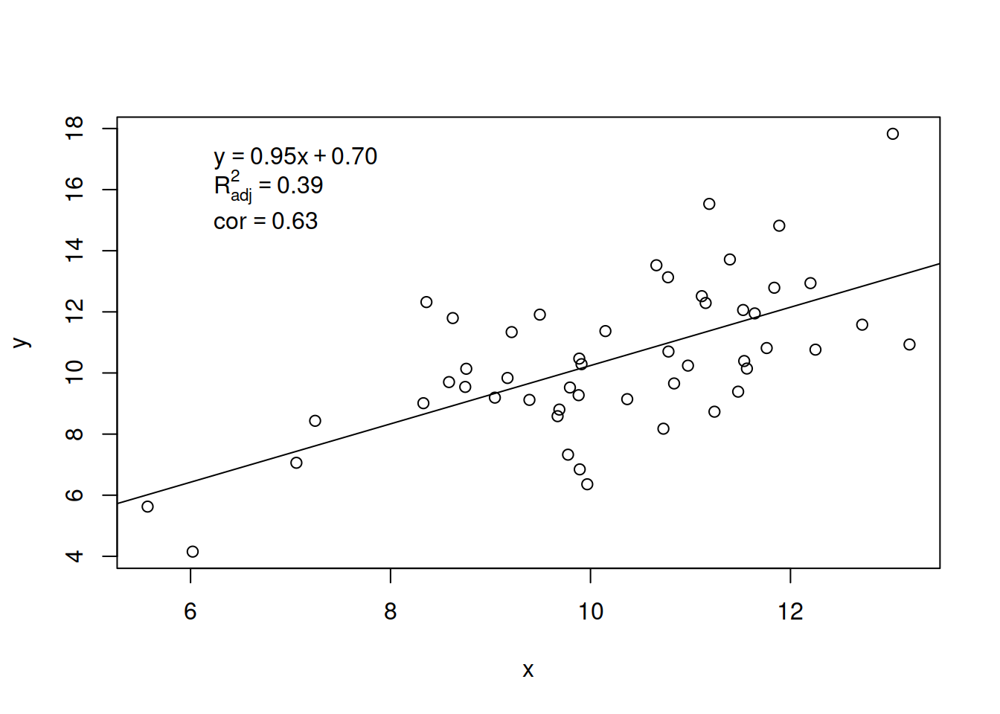
Include CI and PI
fit <- lm(Pax ~ ATM, data = unique2010)
dat <- data.frame(ATM=seq(18000, 26000, length=200))
ci <- predict(fit, newdata=dat, interval="confidence")
pi <- predict(fit, newdata=dat, interval="prediction")
plot(Pax ~ ATM, data=unique2010, pch=20)
lines(dat$ATM, ci[,2], col="green")
lines(dat$ATM, ci[,3], col="green")
lines(dat$ATM, pi[,2], col="blue")
lines(dat$ATM, pi[,3], col="blue")
abline(fit, col="red", lwd=2)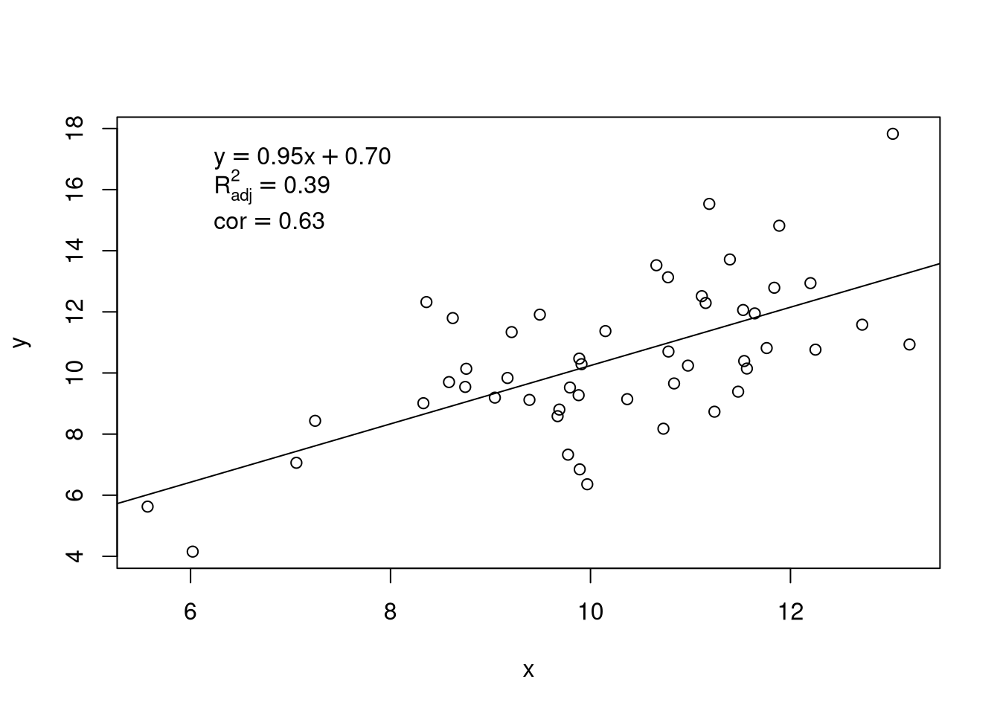
Regression line with log transformation
fit <- lm(log(infant) ~ log(income), data = Leinhardt)
plot(infant ~ income, data = Leinhardt)
my_pre <- data.frame(income = seq(min(Leinhardt$income), max(Leinhardt$income), length.out = 200))
my_pre$infant <- exp(predict(fit, newdata = my_pre))
lines(my_pre$income, my_pre$infant)
22.6 Model comparison
- Gobal F-test
summary() - Partial F-test
anova()- perfect but both models need to be specified
- significance means evidence against the simpler model
drop1()- drops only single terms
- correctly handles factors/interactions
- no testing of single factor levels (factor as a whole is tested)
- hirarchical structure is considered (first drop interaction before droping main factor)
summary()- drops only single parameters
- wrong handling of factors/interactions
22.7 Diagnostic plots
22.7.1 Tukey-Anscombe plot
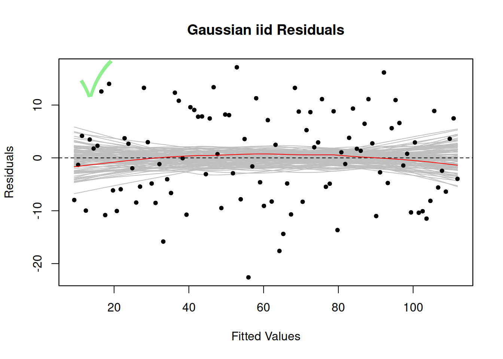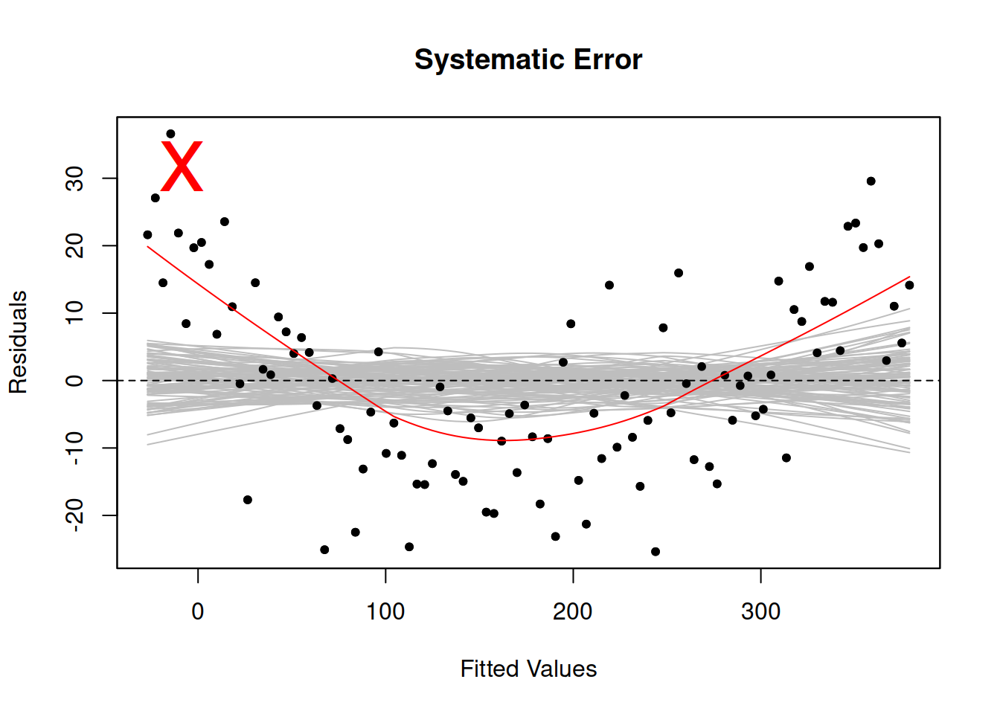
22.7.2 Normal QQ plot
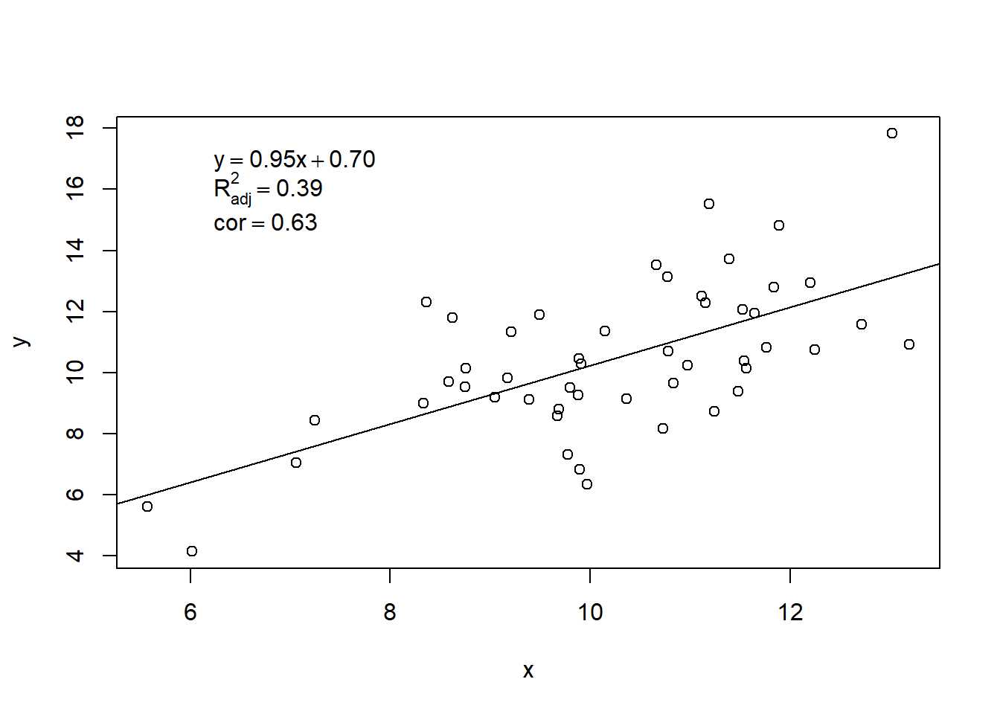
22.7.3 Scale-Location plot
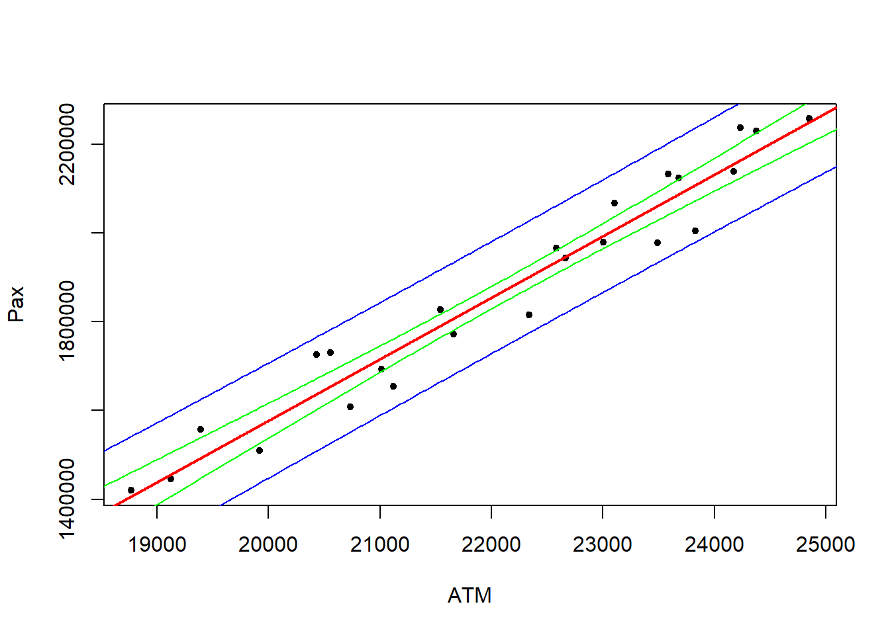
22.7.5 Residuals vs any
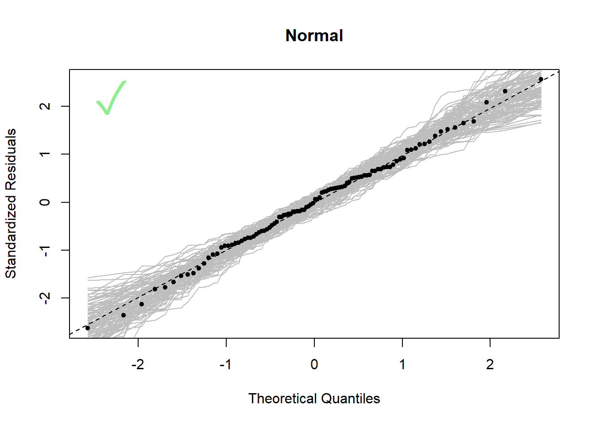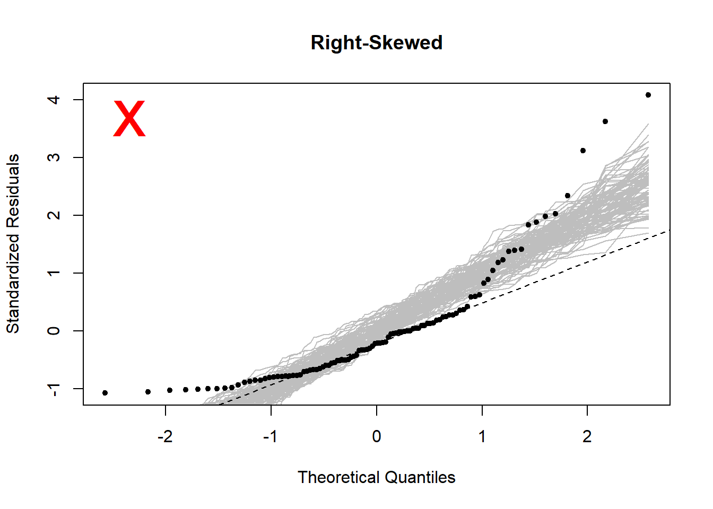
22.7.6 Partial residual plot
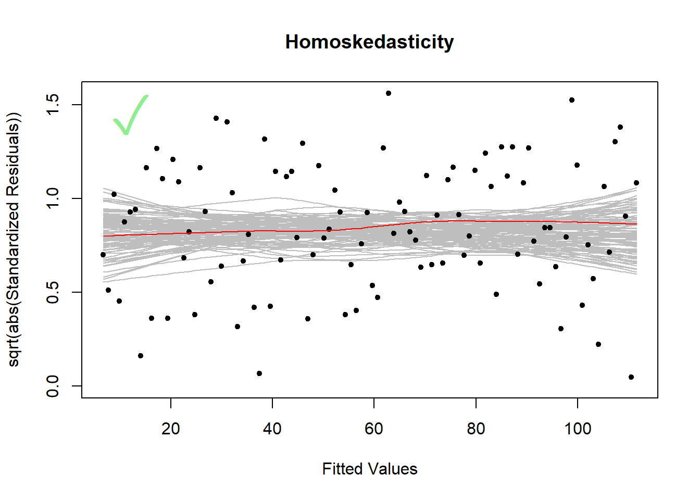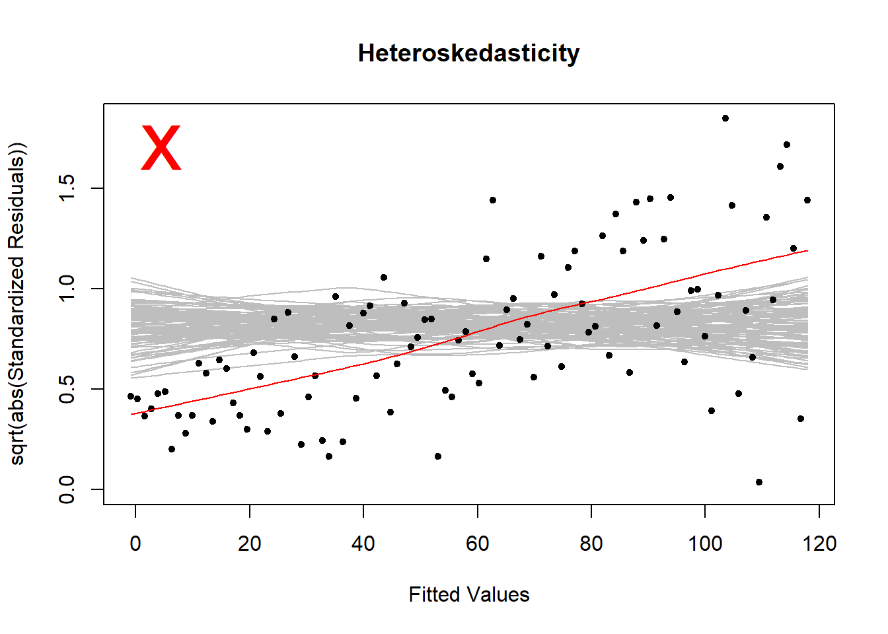
22.8 Model improvement
22.8.1 Multicollinearity
The variance inflation factor \(\text{VIF}\) quantifies the multicollinearity between predictor variables.
- Fit contains only numerical predictors: \(\text{VIF} > 5\) critically
- Fit contains also factorial predictors:
GVIF^(1/(2*Df))\(> 5\) critically
## Only numerical predictors
fit <- lm(Pax ~ ATM + Cargo, data = unique2010)
car::vif(fit)
## ATM Cargo
## 1.052416 1.052416
## Contains fatorial predictor
fit <- lm(Sepal.Length ~ Sepal.Width + Species, data = iris)
car::vif(fit)
## GVIF Df GVIF^(1/(2*Df))
## Sepal.Width 1.668844 1 1.291837
## Species 1.668844 2 1.13659022.8.2 AIC/BIC
\[\begin{align*} \text{AIC} &= -2\log(\text{L}) + 2p \\ \text{BIC} &= -2\log(\text{L}) + \log(n)p \end{align*}\]
where \(\log(\text{L})\) is the log likelihood, \(p\) is the number of estimated parameters and \(n\) is the number of observations.
AIC()Akaike information criterionBIC()Bayesian information criterion
Interpretation
- Smaller is better
- BIC usually stronger penalization for numbers of parameters
- Evidence (\(\Delta \text{AIC}\), \(\Delta \text{BIC}\))
- 0-2 Weak
- 2-6 Positive
- 6-10 Strong
- > 10 Very strong
22.8.3 Variable selection
22.8.3.1 Backward elimination
## Manual
fit01 <- lm(Mortality ~ JanTemp + JulyTemp + RelHum +
Rain + Educ + Dens + NonWhite + WhiteCollar +
log(Pop) + House + Income + log(HC) +
log(NOx) + log(SO2), data=apm) # full model
drop1(fit01, test = "F")
fit02 <- update(fit, .~. – House ) # remove predictor with highest p-value / highest AIC/BIC
drop1(fit02, test = "F")
# ...
## Automatic
fit01 <- lm(Mortality ~ JanTemp + JulyTemp + RelHum +
Rain + Educ + Dens + NonWhite + WhiteCollar +
log(Pop) + House + Income + log(HC) +
log(NOx) + log(SO2), data=apm)
fit02 <- step(fit01, direction = "backward", k = 2) # k defines selection criterion (AIC, BIC)22.8.3.2 Forward selection
## Manual
fit01 <- lm(Mortality ~ 1, data = apm)
f_full <- lm(Mortality ~ JanTemp + JulyTemp + RelHum +
Rain + Educ + Dens + NonWhite + WhiteCollar +
log(Pop) + House + Income + log(HC) +
log(NOx) + log(SO2), data=apm)
add1(fit01, scope = f_full, test = "F")
fit02 <- update(fit01, .~. + NonWhite ) # add predictor with lowest p-value / lowest AIC/BIC
add1(fit02, scope = f_full, test = "F")
# ...
## Automatic
f_full <- lm(Mortality ~ JanTemp + JulyTemp + RelHum +
Rain + Educ + Dens + NonWhite + WhiteCollar +
log(Pop) + House + Income + log(HC) +
log(NOx) + log(SO2), data=apm)
f_null <- lm(Mortality ~ 1, data = apm)
sc <- list(lower = f_null, upper = f_full)
fit02 <- step(f_null, scope = sc, direction = "forward", k = 2) # k defines selection criterion (AIC, BIC)22.8.3.3 Both directions
22.8.3.4 All possible models
f_full <- lm(Mortality ~ JanTemp + JulyTemp + RelHum +
Rain + Educ + Dens + NonWhite + WhiteCollar +
log(Pop) + House + Income + log(HC) +
log(NOx) + log(SO2), data=apm)
fit02 <- leaps::regsubsets(formula(f_full), nbest = 1, dat = apm, nvmax = 14)
plot(fit02) # black predictors are included in the model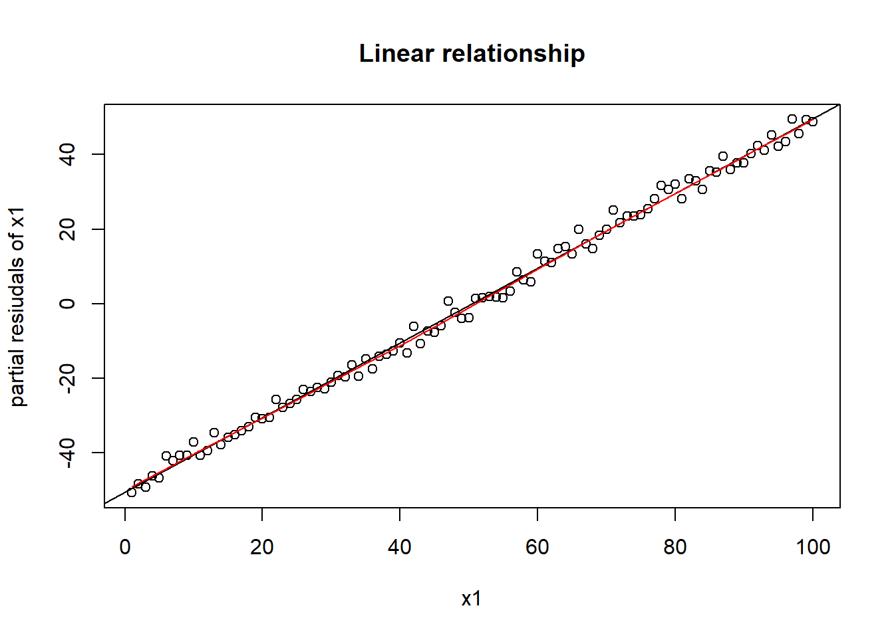
leaps::regsubsets cannot deal correctly with factor variables and interaction terms
(removes single factor levels instead of entire factor, removes main term even if interaction is still included)
22.8.3.5 Select model with lowest predictive MSE
## Automatic (not recommended)
DAAG::CVlm(data, formula, fold.number, ...)
## Manual (this code only test one possible model)
dat <- apm
# Randomly shuffle the data
dat <- dat[sample(nrow(dat)), ]
# Create 10 equally size folds
f <- 10
folds <- cut(seq(1, nrow(dat)), breaks = f, labels = FALSE)
# Perform 10 fold cross validation
SE <- vector("numeric", f)
for(i in 1:f){
#Segement your data by fold using the which() function
testIndexes <- which(folds==i,arr.ind=TRUE)
testData <- dat[testIndexes, ]
trainData <- dat[-testIndexes, ]
#Use the test and train data partitions to check one model
fit <- lm(Mortality ~ NonWhite, data = trainData)
pred <- predict(fit, newdata = testData)
SE[i] <- mean((testData$Mortality - pred)^2)
}
mean(SE)22.9 Shrinkage
See chapter 26
22.10 Smoothing
22.10.1 Running mean (yellow box)
fit <- ksmooth(unique2010$ATM,unique2010$Pax, # Data
kernel = "box", # weighting of points
bandwidth = 1000, # spread of weighting function
n.points = 24, # number of points which should be evaluated
x.points = unique2010$ATM) # where they should be evaluated
plot(unique2010$ATM, unique2010$Pax)
lines(fit)\[\begin{align*} && 0.25 \cdot \text{bandwith} &= Q_{75\%} \\ \Rightarrow && \text{bandwith} &= \text{complete width of box} \end{align*}\]
22.10.2 Gaussian kernel estimate (green gaussian)
fit <- ksmooth(unique2010$ATM,unique2010$Pax,
kernel = "normal",
bandwidth = 1000,
n.points = 1000)
plot(unique2010$ATM, unique2010$Pax)
lines(fit)
\[\begin{align*} && P(X \leq 0.25 \cdot \text{bandwith}) &= 0.75 \\ \Rightarrow && P\left(Z \leq \frac{0.25 \cdot \text{bandwith}}{\sigma}\right) &= 0.75 \\ \Rightarrow && \frac{0.25 \cdot \text{bandwith}}{\sigma} &= \Phi^{-1}(0.75) \\ \Rightarrow && \text{bandwith} &= \frac{\Phi^{-1}(0.75)}{0.25}\sigma \end{align*}\]
22.10.3 LOESS smoother
smoo <- loess.smooth(unique2010$ATM,unique2010$Pax, # Data
span = 2/3, # smoothing parameter (smaller => smoother)
degree = 1, # 1: local linear regr, 2: local polynomial regr
family = "symmetric") # "symmetric": robust fitting, "gaussian": least squares fitting
plot(unique2010$ATM, unique2010$Pax)
lines(fit)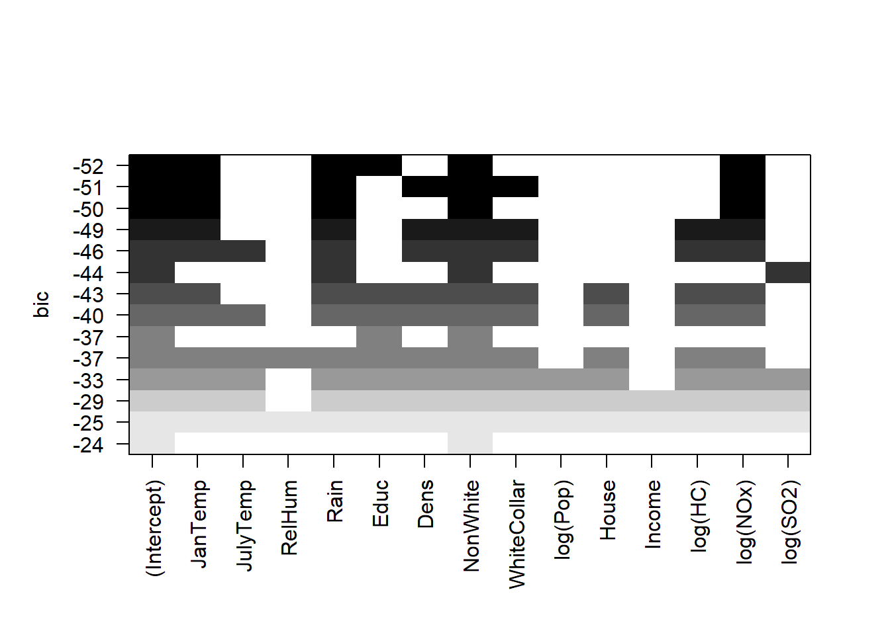
22.11 GAM
Use package mgcv and have a look into the book of Wood.
mgcv::s()smooth splinemgcv::te()interaction between two predictorsmgcv::ti()mgcv::t2()splines::ns()natural splinegam::lo()loess
x <- 1:30
y <- rnorm(30)+10*sin(c(1:30)*0.2)
plot(x, y)
library(mgcv)
fit <- gam(y ~ s(x))
lines(x, fitted(fit))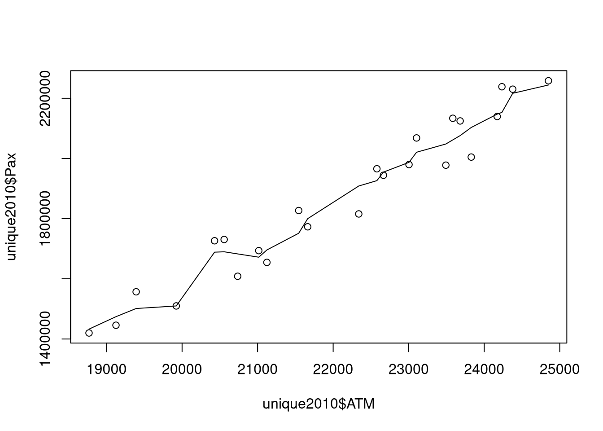
##
## Family: gaussian
## Link function: identity
##
## Formula:
## y ~ s(x)
##
## Parametric coefficients:
## Estimate Std. Error t value Pr(>|t|)
## (Intercept) 0.2373 0.1850 1.283 0.212
##
## Approximate significance of smooth terms:
## edf Ref.df F p-value
## s(x) 5.958 7.117 219.2 <2e-16 ***
## ---
## Signif. codes: 0 '***' 0.001 '**' 0.01 '*' 0.05 '.' 0.1 ' ' 1
##
## R-sq.(adj) = 0.982 Deviance explained = 98.6%
## GCV = 1.3369 Scale est. = 1.0268 n = 30edfEmpirical degrees of freedomRef.dfAlternative way to calculate dfGCVGeneralized cross validation scoreDeviance explainedEquivalent to \(R^2\)Scale est.estimate of \(\sigma_E^2\)
Deviance explained: Equivalent to R2 (not adjusted) Scale est.: estimate of 𝜎_𝐸^2
Options
Diagnostics

##
## Method: GCV Optimizer: magic
## Smoothing parameter selection converged after 5 iterations.
## The RMS GCV score gradient at convergence was 0.0003494895 .
## The Hessian was positive definite.
## Model rank = 10 / 10
##
## Basis dimension (k) checking results. Low p-value (k-index<1) may
## indicate that k is too low, especially if edf is close to k'.
##
## k' edf k-index p-value
## s(Educ) 9.0 2.1 1.03 0.54- low
p-valueandk-index< 1 indicate that actual fit might need more flexibility- increase k-value manually
gam(Mortality ~ s(Educ, k = 50), data = apm)
Visualization
## Partial residual plot
fit_gam <- gam(prestige ~ s(income) + s(education), data = Prestige)
plot(fit_gam, shade = T, residuals = T, main = "GAM Partial Residual Plot", pch = 20)
## 3D plot (only with exactly two s() terms)
vis.gam(fit_gam, theta = 45, phi = 30) # rotation arround vertical (theta) and horizontal (phi) axis
## Interaction spline
fit_gam <- gam(prestige ~ te(income, education), data = Prestige)
plot(fit_gam)Model comparison
fit_ols <- lm(prestige ~ income + education, data = Prestige)
fit_gam <- gam(prestige ~ s(income) + s(education), data = Prestige)
anova(fit_ols, fit_gam, test = "Chisq")## Analysis of Variance Table
##
## Model 1: prestige ~ income + education
## Model 2: prestige ~ s(income) + s(education)
## Res.Df RSS Df Sum of Sq Pr(>Chi)
## 1 99.000 6038.9
## 2 94.705 4585.0 4.2951 1453.9 6.783e-06 ***
## ---
## Signif. codes: 0 '***' 0.001 '**' 0.01 '*' 0.05 '.' 0.1 ' ' 1In our case clear evidence for the more complex GAM model.
Alternatives
smooth.spline()only one dimensional splines- package
gam - package
earth
22.12 GLM
22.12.1 Logistic Regression
Fitting
Possible warning messages of fitting
Warning message:
glm.fit: algorithm did not convergeNumerical optimization failed, coefficients are not trustworthy
Warning message:
glm.fit: fitted probabilities numerically 0 or 1 occuredPerfect separation between binary response options, possible to continue…
Inference
summary()drop1()
Both should yield in similar results. drop1() might be better suited for factorial predictors and interactions (drops only terms which can be dropped).
##
## Call:
## glm(formula = survival ~ log10(weight) + age, family = binomial,
## data = baby)
##
## Deviance Residuals:
## Min 1Q Median 3Q Max
## -2.2694 -0.7032 0.3813 0.6899 2.2186
##
## Coefficients:
## Estimate Std. Error z value Pr(>|z|)
## (Intercept) -42.81347 7.40864 -5.779 7.52e-09 ***
## log10(weight) 12.87954 2.72022 4.735 2.19e-06 ***
## age 0.15187 0.08857 1.715 0.0864 .
## ---
## Signif. codes: 0 '***' 0.001 '**' 0.01 '*' 0.05 '.' 0.1 ' ' 1
##
## (Dispersion parameter for binomial family taken to be 1)
##
## Null deviance: 230.79 on 166 degrees of freedom
## Residual deviance: 158.56 on 164 degrees of freedom
## AIC: 164.56
##
## Number of Fisher Scoring iterations: 5## Single term deletions
##
## Model:
## survival ~ log10(weight) + age
## Df Deviance AIC LRT Pr(>Chi)
## <none> 158.56 164.56
## log10(weight) 1 188.70 192.70 30.1382 4.023e-08 ***
## age 1 161.58 165.58 3.0182 0.08234 .
## ---
## Signif. codes: 0 '***' 0.001 '**' 0.01 '*' 0.05 '.' 0.1 ' ' 1A p-value for a “global F-test” can be manually computed
## [1] 2.220446e-16CI
## 2.5 % 97.5 %
## 7.868942 18.592123## 2.5 % 97.5 %
## -58.49314 -29.29536## Manual
mycoef <- summary(fit)$coefficients
mycoef["(Intercept)","Estimate"] + qnorm(c(0.025, 0.975))*mycoef["(Intercept)","Std. Error"]## [1] -57.33414 -28.29280Coefficient of determination \(R^2\)
Visualization
## Bernoulli probability
lin_pred <- predict(fit, type="link") ## linear predictor
bern_prob <- predict(fit, type="response") ## bernoulli probability
plot(lin_pred, baby$survival, type="n", xlab="linear predictor")
points(lin_pred[baby$survival==0], baby$survival[baby$survival==0], pch = 16, col = "red")
points(lin_pred[baby$survival==1], baby$survival[baby$survival==1], pch = 17)
lines(sort(lin_pred), sort(bern_prob), lty=3)
title("Survival vs. Linear Predictor")## Predictor space (only if exactly two predictors)
plot(age ~ weight, data=baby, type="n")
points(age ~ weight, subset=(survival==0), data=baby, pch = 16, col = "red")
points(age ~ weight, subset=(survival==1), data=baby, pch = 17)
title("Survival after Premature Birth")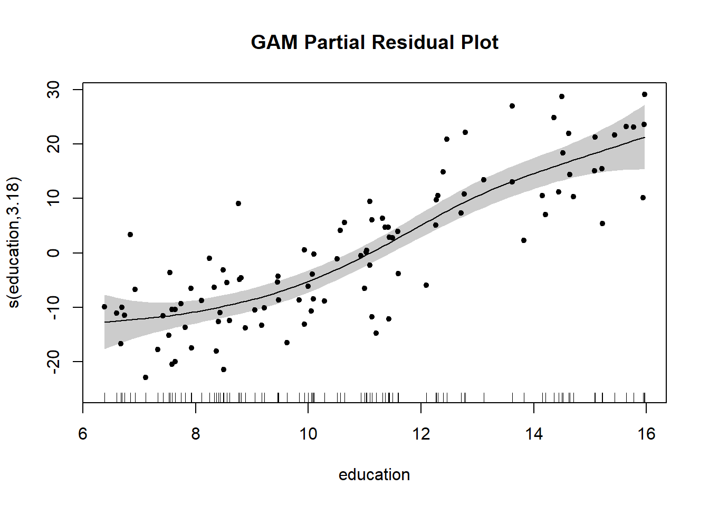
Diagnostics
Different types of residuals
Tukey-Anscombe plot should be done manually because we need a non-robust smoother
22.12.2 Poisson Regression
Fitting
Inference
##
## Call:
## glm(formula = Species ~ log(Area) + log(Elevation) + log(Nearest) +
## I(log(Scruz + 0.4)) + log(Adjacent), family = poisson, data = gala)
##
## Deviance Residuals:
## Min 1Q Median 3Q Max
## -5.4226 -2.7223 -0.4634 2.5587 8.3320
##
## Coefficients:
## Estimate Std. Error z value Pr(>|z|)
## (Intercept) 3.323245 0.286430 11.602 < 2e-16 ***
## log(Area) 0.350370 0.018005 19.459 < 2e-16 ***
## log(Elevation) 0.033108 0.057034 0.580 0.56158
## log(Nearest) -0.040153 0.014071 -2.854 0.00432 **
## I(log(Scruz + 0.4)) -0.035848 0.013207 -2.714 0.00664 **
## log(Adjacent) -0.089452 0.006944 -12.882 < 2e-16 ***
## ---
## Signif. codes: 0 '***' 0.001 '**' 0.01 '*' 0.05 '.' 0.1 ' ' 1
##
## (Dispersion parameter for poisson family taken to be 1)
##
## Null deviance: 3510.73 on 29 degrees of freedom
## Residual deviance: 359.94 on 24 degrees of freedom
## AIC: 532.77
##
## Number of Fisher Scoring iterations: 5Diagnostics
Residuals should lie within range \([-2, 2]\), this would not be fulfilled in our example:
xx <- predict(fit, type="link")
yy <- resid(fit, type="pearson")
plot(xx, yy, main="Tukey-Anscombe Plot",
xlab = "Linear Predictor",
ylab = "Pearson Residuals",
ylim = c(-10, 10))
smoo <- loess.smooth(xx, yy)
abline(h=0, col="grey")
abline(h = c(-2,2), col = "gray", lty = 2)
lines(smoo, col="red")